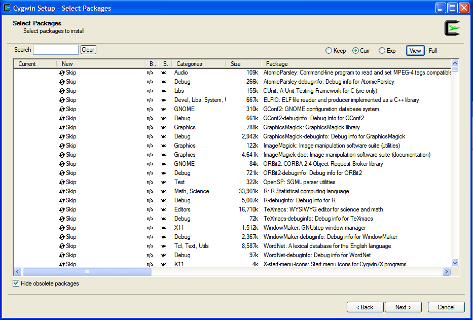

subbotools: cygwin installation
Table of Contents
Introduction
The present document provides a short description of how to install
the subbottols package inside a Cygwin environment.
From its website "Cygwin is a large collection of GNU and Open Source tools which provide functionality similar to a Linux distribution on Windows". The Cygwin DLL currently works with all recent, commercially released x86 32 bit and 64 bit versions of Windows, starting with Windows XP SP3.
Install Cygwin
You can skip this part if you use Cygwin already. Otherwise follow the instructions.
From the Cygwin website download the installation program on the windows machine. There is both a 32 bit and a 64 bit flavor. Launch the executable. It will require to set a few parameters, but I usually accept the default setting. Then you are presented with a page that ask you to select extra packages for installation, similar to the picture below. You will follow the same procedure to update packages or install other packages later.

From this window select the packages (by clicking on the "circular
arrows" symbol on the left) gsl and gsl-devel. Moreover check that
the package make is selected. It should be already, but you never
know. For plotting or graphical analysis install gnuplot
(recommended).
Install subbotools
From the cafed repository download the last tar.gz package and move
it in the /usr/local/ directory. In the Cygwin desktop unpack the
package:
tar xvzf subbotools-{version}.tar.gz
move inside the source directory
cd subbotools-{version}
run the configure script
./configure
then build the files
make
and install them
make install
If more detailed instructions are necessary, see the file INSTALL in
the source directory (you can use the command less INSTALL).
This is the END, enjoy your subbotools :-)